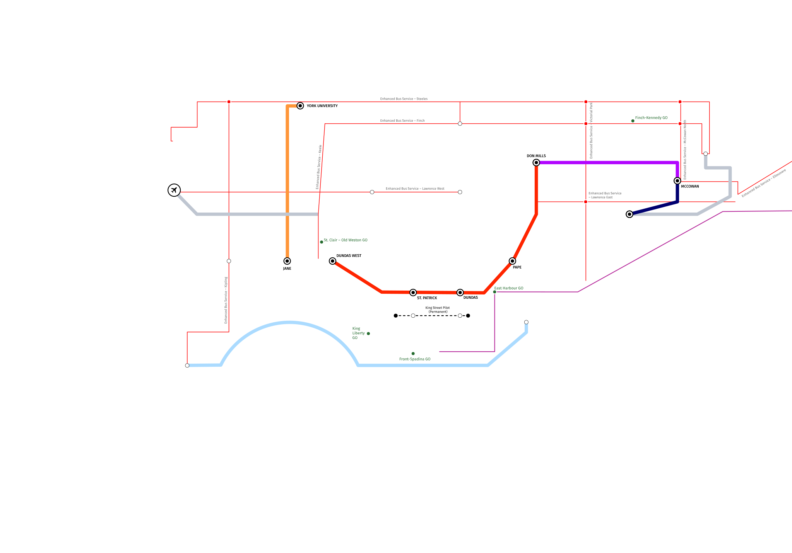
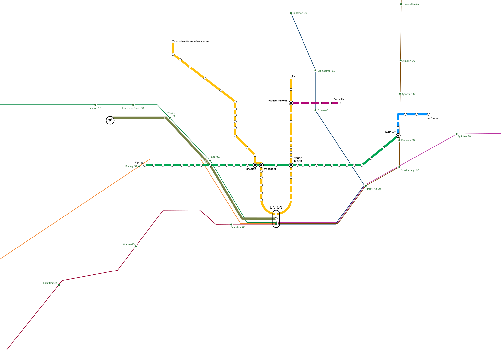

 
A Real Plan for Transit
Support Jennifer Keesmaat’s new
Network Transit Plan
.
PROPOSED
Waterfront LRT
Scarborough Subway
Sheppard RT
Eglinton Crosstown Extensions
Relief Subway Line
Jane LRT
King St. Pilot (Permanent)
Enhanced Bus Services
Proposed GO Stations
IN DEVELOPMENT
Eglinton Crosstown
Finch West LRT
EXISTING NETWORK
Yonge-University Subway Line
Bloor-Danforth Subway Line
Scarborough RT Line
Sheppard Subway Line
Lakeshore West GO Train Line
Milton GO Train Line
Kitchener GO Train Line
Barrie GO Train Line
Stouffville GO Train Line
Lakeshore East GO Train Line
Union-Pearson Express